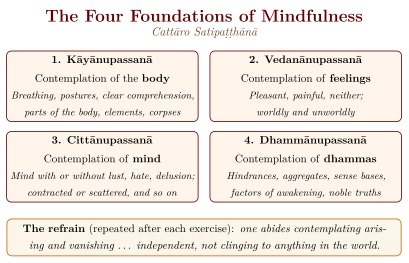
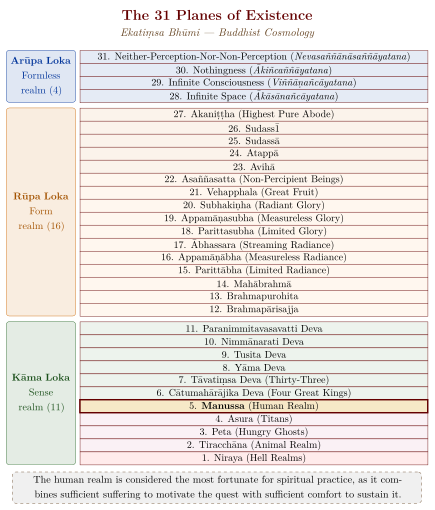

Chapter 4: Theravāda: The Teaching of the Elders¶
4.1 Origins and Identity of Theravāda¶
The Theravāda (“Teaching of the Elders”) is the only one of the early Indian schools of Buddhism to survive to the present day as a living school with its own canon. (The Dharmaguptaka Vinaya, by contrast, survives in East Asia only as the monastic code of Mahāyāna monks and nuns.) Theravādins understand themselves as preserving the authentic Dhamma-Vinaya (Doctrine and Discipline) as taught by the Buddha and compiled at the First Council, and they often point to his instruction, near the end of his life, that his followers should rely on the teaching rather than on any successor:
Attadīpā viharatha
attasaraṇā anaññasaraṇā,
dhammadīpā
dhammasaraṇā anaññasaraṇā.
Dwell with yourselves as your island, with yourselves as your refuge, with no other refuge; dwell with the Dhamma as your island, with the Dhamma as your refuge, with no other refuge.
— Dīgha Nikāya 16, Mahāparinibbāna Sutta (Walshe 1995)
The term Theravāda (Sanskrit: Sthaviravāda) refers to the “Doctrine of the Elders” (theras), signifying the senior monks who, according to tradition, maintained the orthodox teachings in the face of various innovations and reinterpretations proposed by other groups. Some time after the Second Council at Vaiśālī, about a century after the Buddha’s death, the Saṅgha divided into the Sthaviras (“Elders”) and the Mahāsāṅghikas (“Great Community”), and further schools developed from each. Historically, the Theravāda is the branch of the Sthavira lineage that became established in Sri Lanka, centred on the Mahāvihāra monastery of Anurādhapura; from there it spread to mainland Southeast Asia, where it became dominant from the eleventh to the fourteenth centuries (Gombrich 2006; Gethin 1998).
4.1.1 The Vibhajjavāda Heritage¶
The Theravāda school is closely associated with the Vibhajjavāda (“Doctrine of Analysis”) — a tradition that emphasised careful, analytical investigation of the Dhamma. The Third Council at Pāṭaliputra, convened under Emperor Aśoka (c. 250 BCE), is regarded in the Sri Lankan chronicles as the council at which the Vibhajjavādin position was vindicated, and from which the Theravāda mission to Sri Lanka was dispatched under the leadership of Aśoka’s son, the Venerable Mahinda.
4.2 The Pāli Commentarial Tradition¶
While the Tipiṭaka provides the canonical foundation, the Theravāda intellectual tradition is equally characterised by a rich commentarial literature (Aṭṭhakathā) and sub-commentarial literature (Ṭīkā) that systematise, explain, and extend the canonical teachings.
4.2.1 Buddhaghosa and the Visuddhimagga¶
The central figure of the Theravāda commentarial tradition is Bhadantācariya Buddhaghosa (5th century CE), described in the later chronicles as a brāhmaṇa from India (the region is disputed) who travelled to Sri Lanka and, working from the older Sinhala commentaries of the Mahāvihāra, produced the standard Pāli commentaries on the major divisions of the Tipiṭaka.
His principal independent work, the Visuddhimagga (“Path of Purification”), became the standard exposition of Theravāda doctrine and practice (Buddhaghosa 1956). It is a commentary on a single verse of the Saṃyutta Nikāya (quoted below), arranged under the three trainings of morality, concentration and wisdom (Table 4.1), and its authority is such that later Theravāda has largely read the canon through it.
| Division | Training | Chapters | Content |
|---|---|---|---|
| Part I | Sīla (Morality) | 1–2 | The foundation of moral discipline; the Pātimokkha rules; ascetic practices (dhutaṅga) |
| Part II | Samādhi (Concentration) | 3–13 | Forty meditation subjects (kammaṭṭhāna); development of jhāna (meditative absorption); divine abodes (brahmavihāra) |
| Part III | Paññā (Wisdom) | 14–23 | Abhidhamma analysis; dependent origination; the five aggregates; insight knowledge (vipassanā-ñāṇa); the path and its fruit |
Sīle patiṭṭhāya naro sapañño
cittaṃ paññañ ca bhāvayaṃ,
ātāpī nipako bhikkhu
so imaṃ vijaṭaye jaṭaṃ.
A wise man, established in virtue, developing mind and wisdom, a monk ardent and discerning — he can disentangle this tangle.
— Saṃyutta Nikāya 1.23, the verse on which the Visuddhimagga is a commentary
4.3 Vipassanā Meditation¶
Vipassanā (“insight”) meditation constitutes the distinctive meditative practice of the Theravāda tradition. While samatha (tranquillity) meditation aims at the development of deep concentration (jhāna), Vipassanā aims at the direct, experiential insight into the three characteristics of existence: anicca (impermanence), dukkha (unsatisfactoriness), and anattā (non-self) (Gethin 1998; Gombrich 2006).
4.3.1 The Satipaṭṭhāna Method¶
The foundational text for Vipassanā practice is the Mahāsatipaṭṭhāna Sutta (“Great Discourse on the Foundations of Mindfulness,” DN 22), which lays out four domains of mindful observation (Figure 4.1).

4.3.2 The Stages of Insight¶
The Theravāda tradition, drawing on the canonical Paṭisambhidāmagga and the Visuddhimagga, describes in its later manuals a progressive sequence of sixteen insight knowledges (vipassanā-ñāṇa). The meditator first learns to distinguish mental from material events (nāmarūpa-pariccheda) and to see their conditions (paccaya-pariggaha); then comprehends them as impermanent, unsatisfactory and non-self (sammasana) and sees their arising and passing away (udayabbaya). As attention settles on their passing, the series continues through knowledges of dissolution (bhaṅga), of fearfulness, misery and disenchantment, of the desire for deliverance, of re-observation, and of equanimity towards all formations (saṅkhārupekkhā). The last four — conformity, “change of lineage” (gotrabhū), path and fruition — occupy only a few moments at the point of awakening, and the sequence ends with a reviewing knowledge (paccavekkhaṇa) in which the meditator surveys what has been attained. The scheme is a map drawn by teachers for teachers; modern meditation masters disagree about how literally it describes experience.
4.4 The Four Stages of Awakening¶
The Theravāda tradition recognises four distinct stages of awakening, each marked by the eradication of specific mental fetters (saṃyojana; Table 4.2).
| Stage | Fetters Abandoned | Result |
|---|---|---|
| Sotāpanna (Stream-Enterer) | Identity view, doubt, attachment to rites and rituals | At most 7 more rebirths; never reborn in lower realms |
| Sakadāgāmī (Once-Returner) | Weakening of sensual desire and ill-will | At most one more return to the human realm |
| Anāgāmī (Non-Returner) | Complete abandonment of sensual desire and ill-will | Reborn in the Pure Abodes; attains Nibbāna there |
| Arahant (Worthy One) | Desire for material and immaterial existence, conceit, restlessness, ignorance | Complete liberation; no further rebirth |
4.5 The Theravāda Worldview: Buddhist Cosmology¶
The Theravāda tradition preserves a detailed cosmological framework describing thirty-one planes of existence (bhūmi) through which beings cycle in accordance with their karma (Figure 4.2).

4.6 The Forty Meditation Subjects (Kammaṭṭhāna)¶
The Visuddhimagga systematises the meditative tradition of Theravāda Buddhism into forty meditation subjects (kammaṭṭhāna), each suited to different temperaments and spiritual needs (Table 4.3).
| Category | Number | Subjects |
|---|---|---|
| Ten Kasiṇas | 10 | Earth, water, fire, air, blue, yellow, red, white, light, space |
| Ten Asubhas (Corpse meditations) | 10 | Bloated, livid, festering, cut-up, gnawed, scattered, hacked & scattered, bleeding, worm-infested, skeleton |
| Ten Anussatis (Recollections) | 10 | Buddha, Dhamma, Saṅgha, morality, generosity, devas, death, body, breathing, peace |
| Four Brahma-vihāras | 4 | Loving-kindness, compassion, sympathetic joy, equanimity |
| Four Formless spheres | 4 | Infinite space, infinite consciousness, nothingness, neither-perception-nor-non-perception |
| One Perception | 1 | Perception of the repulsiveness of food |
| One Analysis | 1 | Analysis of the four elements |
The selection of the appropriate meditation subject is guided by the practitioner’s temperament (carita). The Visuddhimagga identifies six temperament types: greedy (rāga-carita), hateful (dosa-carita), deluded (moha-carita), faithful (saddhā-carita), intelligent (buddhi-carita), and speculative (vitakka-carita). For example, the corpse meditations are prescribed for those with a greedy temperament, while the brahma-vihāras are prescribed for those with a hateful temperament.
4.7 The Jhānas: Meditative Absorptions¶
The development of concentration (samādhi) through the practice of samatha (tranquillity) meditation leads to the attainment of the jhānas — states of deep meditative absorption characterised by stillness, clarity and happiness. The Theravāda tradition describes four form-sphere jhānas (rūpa-jhāna) and four formless jhānas (arūpa-jhāna; Table 4.4).
| Jhāna | Name | Characteristics |
|---|---|---|
| 1st Rūpa | First Jhāna | Vitakka (applied thought), vicāra (sustained thought), pīti (rapture), sukha (happiness), ekaggatā (one-pointedness) |
| 2nd Rūpa | Second Jhāna | Pīti, sukha, ekaggatā — thought factors have ceased |
| 3rd Rūpa | Third Jhāna | Sukha, ekaggatā — rapture has faded; mindfulness and clear comprehension |
| 4th Rūpa | Fourth Jhāna | Upekkhā (equanimity), ekaggatā — neither pleasure nor pain; purified mindfulness |
| 1st Arūpa | Sphere of Infinite Space | Transcending form; attention on boundless space |
| 2nd Arūpa | Sphere of Infinite Consciousness | Attention on boundless consciousness |
| 3rd Arūpa | Sphere of Nothingness | Attention on the absence of anything |
| 4th Arūpa | Sphere of Neither-Perception-Nor-Non-Perception | The subtlest state of consciousness |
Vivicc’ eva kāmehi
vivicca akusalehi dhammehi
savitakkaṃ savicāraṃ
vivekajaṃ pītisukhaṃ
paṭhamaṃ jhānaṃ upasampajja viharati.
““Secluded from sensual pleasures, secluded from unwholesome states, one enters and dwells in the first jhāna, which is accompanied by applied and sustained thought, with rapture and happiness born of seclusion.””
— Stock formula for the first jhāna, e.g. Dīgha Nikāya 2 (Sāmaññaphala Sutta)
The jhānas serve as the foundation for the development of vipassanā (insight). While the jhānas themselves do not constitute enlightenment, they provide the mental stability and clarity necessary for the penetrating insight into the three characteristics (tilakkhaṇa) that leads to liberation.
4.8 The Commentarial and Sub-Commentarial Literature¶
The Theravāda intellectual tradition extends far beyond the canonical texts. A vast literature of commentaries (aṭṭhakathā), sub-commentaries (ṭīkā), and independent treatises (pakaraṇa) elaborates, systematises, and extends the canonical teachings (Table 4.5).
| Work | Author | Significance |
|---|---|---|
| Visuddhimagga | Buddhaghosa (5th cent.) | The definitive compendium of Theravāda path and practice |
| Aṭṭhasālinī | Buddhaghosa | Commentary on the Dhammasaṅgaṇī |
| Sammohavinodanī | Buddhaghosa | Commentary on the Vibhaṅga |
| Abhidhammatthasaṅgaha | Anuruddha (c. 10th–12th cent.; date disputed) | Concise manual of Abhidhamma; the most widely studied Abhidhamma text today |
| Milindapañha | Anonymous (composite; core perhaps 1st c. BCE–1st c. CE) | Dialogue between the Indo-Greek king Menander (Milinda) and the monk Nāgasena |
| Vimuttimagga | Upatissa (early centuries CE; survives in Chinese) | An earlier “Path of Freedom” closely related to the Visuddhimagga |
| Paṭisambhidāmagga | Canonical (Khuddaka Nikāya) | Analytical treatise on insight knowledge |
| Nettipakaraṇa | Attributed to Mahākaccāna | Hermeneutical method for interpreting the Buddha’s discourses |
Scholarly Note: The Milindapañha
The Milindapañha (“Questions of King Milinda”) is a lively philosophical dialogue, though it is a non-canonical work in most Theravāda countries (it is included in the Burmese canon). It records a dialogue between the Indo-Greek king Menander I (Milinda, who ruled in northwestern India c. 155–130 BCE) and the Buddhist monk Nāgasena. The text’s famous “chariot simile” — in which Nāgasena demonstrates that a chariot is nothing over and above its parts, just as a person is nothing over and above the five aggregates — is one of the classic arguments for the doctrine of anattā (non-self). Whether or not it records an actual conversation, the text reflects the encounter between Buddhism and the Greek rulers of the north-west.
4.9 Theravāda Buddhism in Southeast Asia¶
Theravāda Buddhism became the dominant religious and cultural force in Sri Lanka and mainland Southeast Asia, shaping the civilisations of Sri Lanka, Myanmar, Thailand, Cambodia, and Laos for many centuries (Table 4.6).
| Country | Period of Establishment | Distinctive Features |
|---|---|---|
| Sri Lanka | c. 250 BCE (Mission of Mahinda) | Custodian of the Pāli Canon; Anuradhapura and Polonnaruwa kingdoms; Great Chronicle (Mahāvaṃsa); monastic forest tradition |
| Myanmar | c. 5th cent. CE; reformed 11th cent. | Bagan temple complex; the Shwedagon Pagoda; strong Abhidhamma tradition; lay meditation movement |
| Thailand | c. 13th cent. (Sukhothai) | Royal patronage; Dhammayut and Mahā Nikāya fraternities; Thai Forest Tradition (Ajahn Mun lineage) |
| Cambodia | c. 13th–14th cent. | Replaced the Śaiva, Vaiṣṇava and Mahāyāna cults of the Angkorian kings; survived the Khmer Rouge period |
| Laos | c. 14th cent. | Pha That Luang stūpa; integration with indigenous spirit traditions; That Luang Festival |
In each of these countries, Theravāda Buddhism became deeply interwoven with national identity, royal authority, artistic expression, and social organisation. The Saṅgha served not only as a spiritual institution but as a centre of education, literacy, and social welfare, and monastery schools long provided basic education for boys in Myanmar, Thailand and elsewhere.
4.9.1 Chronicles, Reforms and Ordination Lineages¶
The Sri Lankan chronicles, the Dīpavaṃsa (4th–5th century) and the Mahāvaṃsa (attributed to Mahānāma, 5th–6th century), are the main source for the Theravāda account of the councils and of Mahinda’s mission. They are monastic histories written from the standpoint of the Mahāvihāra and must be used critically (Gombrich 2006). For centuries the Mahāvihāra competed with the Abhayagiri and Jetavana monasteries of Anurādhapura, which were more open to Mahāyāna and tantric ideas; in the twelfth century King Parākramabāhu I (r. 1153–1186) unified the Saṅgha under Mahāvihāra orthodoxy.
Because valid ordination requires an unbroken succession of properly ordained monks, the Theravāda countries repeatedly renewed their lineages from one another. Burmese tradition credits King Anawrahta of Pagan (r. 1044–1077) with establishing Theravāda after his conquest of Thaton, and the Kalyāṇī inscriptions of King Dhammazedi (1479) record a reform in which Burmese monks were reordained in the Sri Lankan lineage. In 1753, when the Sri Lankan order had declined, monks from Ayutthaya in Siam re-established higher ordination at Kandy, founding the Siyam Nikāya; because it admitted only men of the Goyigama caste, the Amarapura (early nineteenth century) and Rāmañña (1864) Nikāyas were later founded with ordination lineages brought from Burma. In Siam the future King Mongkut (Rama IV), while still a monk, founded the reformist Dhammayuttika order in the 1830s (Gombrich 2006; Harvey 2013).
4.10 Modern Theravāda and the Vipassanā Movement¶
In the twentieth century meditation, long regarded in most Theravāda countries as a specialist pursuit of a few monks, became a mass practice for lay people. The movement began in Burma. Ledi Sayadaw (1846–1923), a monk and scholar, taught meditation and Abhidhamma to laymen, partly as a defence of Buddhism under colonial rule, and some of his lay pupils became teachers in their turn; through one of them, Saya Thetgyi, and his pupil Sayagyi U Ba Khin, the method reached S. N. Goenka (1924–2013), a Burmese-Indian businessman whose free ten-day residential courses are now held in many countries and have brought a Burmese form of Theravāda practice to a wide Indian public. Mahasi Sayadaw (1904–1982) developed the “noting” technique, the continuous mental labelling of present experience, and spread it through a network of centres in Burma and abroad. Among those trained in his method was Dipa Ma (Nani Bala Barua, 1911–1989), a Bengali Barua Buddhist widow from Chittagong who became a renowned teacher in Kolkata and later taught in the United States. In Thailand the forest tradition of Ajahn Mun produced teachers such as Ajahn Chah (1918–1992), whose Western disciples founded monasteries in Europe, North America and Australasia.
These movements changed Theravāda. They made meditation, rather than merit-making alone, the mark of a serious lay Buddhist; they produced teachers, many of them women, outside the monastic hierarchy; and they presented the Buddha’s teaching as a practical method of mental training, an emphasis that has made it attractive abroad and has also been criticised as a modern simplification of the tradition (Gombrich 2006; Harvey 2013).
4.11 The Theravāda Saṅgha Today¶
Theravāda remains the majority religion of Sri Lanka, Myanmar, Thailand, Cambodia and Laos, and it has established a presence in the West through migration, monastic foundations and the spread of meditation. Its monks continue to treat the Pāli canon, read through Buddhaghosa’s commentaries, as the authoritative record of the Buddha’s teaching. The tradition’s claim to be the conservative heir of the earliest Saṅgha has a real basis in the age of its canon and the continuity of its Vinaya; but it is also, as the chronicles and the repeated reforms of its ordination lineages show, the product of a long and contested history in Sri Lanka and Southeast Asia.